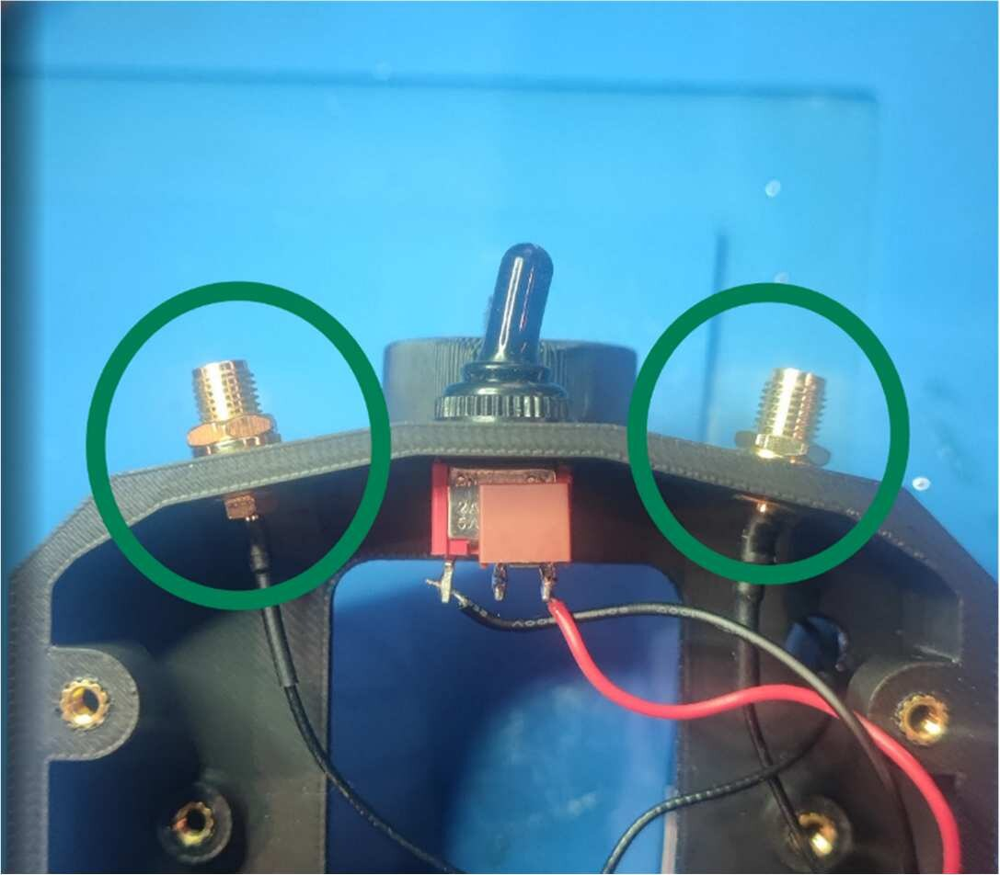
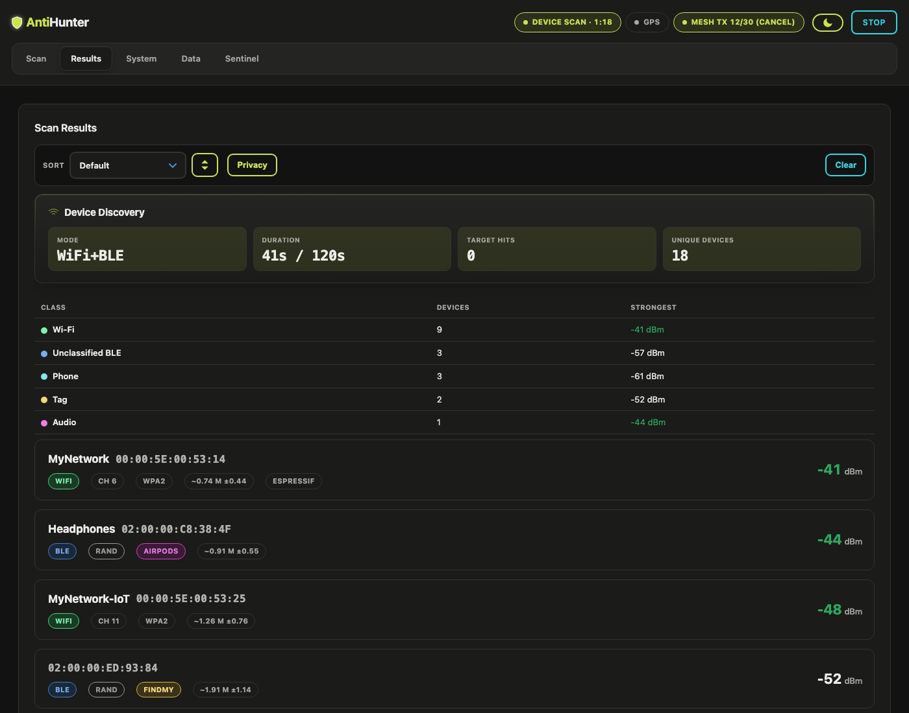
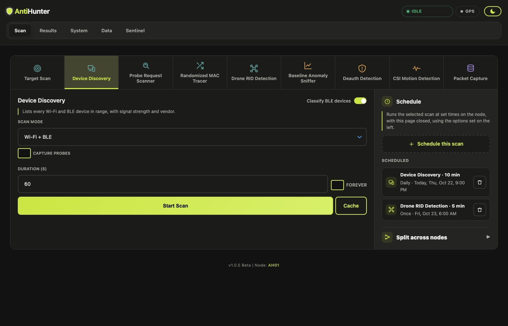
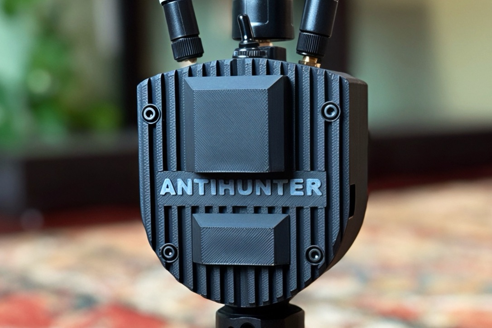
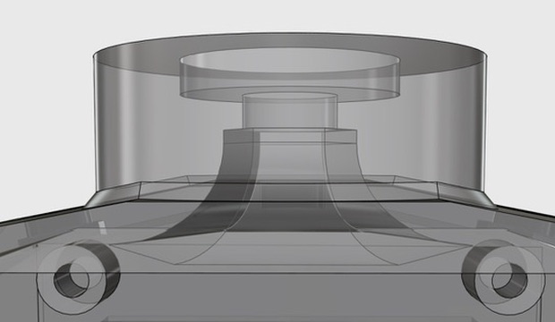

Covers all four tiers: Fully Assembled Unit · Complete Parts Kit · Populated PCB · Bare PCB
Guide revision 1.6 · 23 November 2026 · Firmware v1.0.5 · Written for the current Stable and Beta firmware channels
github.com/lukeswitz/AntiHunter · Web flasher: lukeswitz.github.io/AntiHunter
Hello, operator
The DIGI node is a detection node you leave in a home, a vehicle, along a fence line, or at a site with no signal. AntiHunter, its firmware, listens to the Wi-Fi and Bluetooth around it and tells you who is there, who is new, and who is attacking. You control the node from its web UI (Full build), with text commands over LoRa from any Meshtastic radio on your channel, or on its USB serial port. It needs no internet connection, cloud account or server.
This guide takes you from the box to a node in the field. Building a kit or a bare board is in the assembly manual, not here. Section 10 has playbooks you can run step by step, and section 11 lists every feature.
Read before applying power: three rules
1. Regulated 5 V only. Power the PCB from USB, a bench supply set to 5 V, a DC-DC regulator, or the UPS board. Never connect 18650 cells, a battery pack, or a vehicle supply directly to the board. Unregulated input permanently damages the modules. Voltages under 4.5 V cause instability.
2. Never power the LoRa radio without its antenna. Transmitting into an open port can destroy the radio's power amplifier. Fit the LoRa antenna, or the U.FL pigtail plus antenna, before you power the node.
3. One USB cable at a time. The ESP32 and the Meshtastic radio share the PCB's power rails, and with both USB ports plugged in one board back-feeds the other. Unplug one before you plug in the other.
What you are holding
Tier
What is in the box
What you still do
1 · Fully Assembled Unit
Built, tested, radio flashed.
Fit two 18650 cells, screw on the antennas (§3), flash AntiHunter (§5), set the radio region and channel (§7.1, §8.2).
2 · Complete Parts Kit
All parts, unassembled and unflashed.
Build it with the assembly manual, flash Meshtastic on the radio (§5.1), flash AntiHunter (§5) and configure.
3 · Populated PCB
Assembled and tested, radio flashed.
Attach the antennas (§3), supply power (§4), flash AntiHunter (§5), set the radio region and channel (§7.1, §8.2).
4 · Bare PCB
One unpopulated board.
Source the parts and build it with the assembly manual, flash Meshtastic on the radio (§5.1), flash AntiHunter (§5).
The ESP32 comes empty on every tier. You flash AntiHunter yourself.
Open the box on a static-safe surface and check it against your tier before you power anything.
1.1 Tier checklists
Check the box against your tier
Tier 1: a tested node with an 8 GB SD card fitted, SMA antennas for 2.4 GHz Wi-Fi/BLE and for LoRa in your region, and an active GPS helix antenna. Meshtastic is on the radio, and its serial link is set up.
Tier 2: every part in the bill of materials, unassembled and unflashed, plus the 3D-printed enclosure and TPU seals. The GPS module comes with its factory ceramic antenna. The assembly manual lists each part.
Tier 3: a PCB with all modules soldered and an 8 GB SD card fitted, plus the factory U.FL antennas: a flat 2.4 GHz film, a coiled LoRa whip, and a ceramic GPS patch. Meshtastic is on the radio. It has no enclosure and no power source.
Tier 4: one unpopulated 82 mm PCB. The parts come from the bill of materials, and you flash the radio yourself.
1.2 What you supply
18650 cells for tiers 1 and 2. Tier 3 can run from USB or a regulated 5 V supply. We never supply cells. Use a matched pair of brand-new flat-top cells such as Samsung 35E or Sony/Murata VTC6. Sourcing, charging, storage and disposal are your responsibility.
A micro SD card, only on the Bare PCB tier. Use an 8 GB card formatted FAT32.
A USB-C data cable. Charge-only cables will not flash the board.
A computer running Chrome or Edge for the web flasher, or a terminal for the CLI installer.
Tiers 2 and 4: build first
The illustrated assembly manual covers soldering, connectors, the enclosure, the SD card, the fasteners and the power wiring. It is hw/Prototype_STL_Files/Antihunter-DIGINODE-AssemblyManual.pdf at github.com/lukeswitz/AntiHunter. Part links are in hw/Prototype_STL_Files/BOM-Links.md. Finish the build, then continue at §3.
2Legal and safety
2.1 Authorization
AntiHunter is distributed for lawful, authorized defensive use only: security research, blue-team training, compliant monitoring, event security and network auditing. Operate it only on networks, devices, spectrum and datasets you own or have explicit written permission to assess. Its detection, correlation and triangulation features exist to characterize an environment you are authorized to assess, not to identify, follow or profile people. Targeted surveillance, stalking, harassment and tracking individuals without informed consent are prohibited.
2.2 Radio compliance
You are responsible for every rule governing radio use where you operate: FCC Part 15 and Part 97, CE/RED, Ofcom and their national equivalents, ISM band allocations, power limits, duty cycles and licensing conditions. The LoRa region (868 MHz EU, 915 MHz US, 923 MHz Asia) is a setting you choose on the radio, and selecting a region other than the one you are in may be unlawful. Never use the node to cause harmful interference.
2.3 Interception and privacy
Most jurisdictions regulate passive reception of radio emissions separately from network access. Capturing, storing, decoding or disclosing frame contents and identifiers may engage the US Wiretap Act and ECPA, state two-party-consent statutes, the UK Investigatory Powers Act or equivalents. Check each capture mode is lawful where you are before you enable it.
MAC addresses, probe request contents, BLE advertisements and Remote ID broadcasts may be personal data under GDPR, UK GDPR, CCPA/CPRA and similar laws. Collect only with a lawful basis, keep as little as you can, set a retention and destruction schedule, and honor data-subject rights. The maintainers never receive, process or host your data.
2.4 Drone Remote ID
Receiving broadcast Remote ID is permitted in most places. Using that data to locate, approach, confront or interfere with an aircraft or its operator may violate aviation, harassment or anti-stalking law, including 18 U.S.C. § 32.
2.5 Hardware and battery safety
Kits, bare boards and assembled units are supplied for people competent in electronics assembly. Correct assembly, ESD control, antenna selection and attachment, and a regulated 5 V supply are your responsibility. Operating the transceiver without a matched antenna can damage the hardware. Lithium cells are never supplied. Sourcing, protection, charging, storage, transport and disposal are yours and carry fire and injury risk. The hardware is not certified for life-safety, medical, aviation, automotive or industrial-control applications. It does not replace a certified security or alarm system, and its output is advisory, with false positives and false negatives.
2.6 Experimental features
Modes marked beta or experimental, and Sentinel, Triangulation and MAC Randomization Correlation, are unvalidated and may produce inaccurate output. Do not rely on them for operational, evidentiary, investigative or safety decisions.
Disclaimer
EXCEPT AS PROVIDED IN THE NEXT PARAGRAPH FOR UNITS, KITS AND BOARDS SOLD WITH A WRITTEN LIMITED WARRANTY, THE PROJECT, INCLUDING SOFTWARE, FIRMWARE, HARDWARE DESIGNS AND DOCUMENTATION, IS PROVIDED "AS IS" AND "AS AVAILABLE", WITHOUT WARRANTY OF ANY KIND, EXPRESS OR IMPLIED, INCLUDING WARRANTIES OF MERCHANTABILITY, FITNESS FOR A PARTICULAR PURPOSE, TITLE, NON-INFRINGEMENT, ACCURACY, DETECTION EFFICACY OR UNINTERRUPTED OPERATION. This supplements and does not limit the warranty disclaimer and liability limitation in sections 15 to 17 of the GNU Affero General Public License v3.0.
WHERE THE MAINTAINERS GIVE A WRITTEN LIMITED WARRANTY ON A PRODUCT LISTING, ANY IMPLIED WARRANTY THAT CANNOT LAWFULLY BE DISCLAIMED IS LIMITED TO THE DURATION OF THAT WRITTEN WARRANTY, AND REPAIR OR REPLACEMENT UNDER IT, CAPPED AT THE PRICE PAID, IS YOUR SOLE AND EXCLUSIVE REMEDY.
TO THE MAXIMUM EXTENT PERMITTED BY LAW, THE AUTHORS, DEVELOPERS, MAINTAINERS, SELLERS AND CONTRIBUTORS SHALL NOT BE LIABLE FOR ANY DIRECT, INDIRECT, INCIDENTAL, SPECIAL, EXEMPLARY, PUNITIVE OR CONSEQUENTIAL DAMAGES, including hardware failure, fire, smoke, overheating, battery or electrical faults, property damage, injury, loss of data, profits, goodwill, equipment or business interruption, or damages arising from failure to detect, false detection, or regulatory enforcement action, ARISING FROM OR RELATED TO YOUR PURCHASE, ASSEMBLY, POSSESSION OR USE OF THE PROJECT OR ANY UNIT, WHETHER IN CONTRACT, TORT (INCLUDING NEGLIGENCE), STRICT OR PRODUCT LIABILITY, OR OTHERWISE, EVEN IF ADVISED OF THE POSSIBILITY. Where liability cannot be fully disclaimed, total aggregate liability shall not exceed the greater of the amount paid for the unit giving rise to the claim, or USD $0.
You use every unit, kit and board entirely at your own risk from the moment it is delivered to you. Hardware, radios, power circuits and batteries can fail, overheat, smoke, catch fire, damage property, cause injury or behave in ways nobody expected, whatever the cause. You accept all of these risks.
Apart from the written limited warranty on the product listing, assembly, sale or instruction by the maintainers creates no warranty, no certification, no fitness-for-purpose representation and no responsibility for how a unit is later configured, deployed or used. Once the unit is in your hands, operation, compliance and every outcome of running it are yours alone. Purchasing a unit, kit or board, or flashing the firmware by web flasher, shell script or any other means, is acceptance of these terms.
Nothing here excludes liability that cannot lawfully be excluded, including for death or personal injury caused by negligence, for fraud, or non-excludable statutory consumer rights. Some jurisdictions do not allow the exclusion of implied warranties or the limitation of incidental or consequential damages, so parts of the above may not apply to you.
You alone are responsible for ensuring your build, deployment and operation comply with all applicable laws, regulations, licenses, permits, equipment authorizations, organizational policies and third-party rights. These terms and every sale by the maintainers are governed by Colorado law, and disputes go to the state or federal courts in Colorado. If you do not agree to these terms, do not buy, build, flash, assemble, deploy or operate AntiHunter.
Full text: Legal Disclaimer in the project README. Firmware is licensed under the GNU AGPL v3.0. Hardware and documentation are licensed as stated in their own files.
3Antennas
U.FL connectors are small and break if pressed on at an angle.
Passive ceramic patch, supplied with the GPS module
Active helix, Fully Assembled Unit only
GPS module U.FL socket, or the SMA bulkhead in the battery housing
The connectors are standard SMA, not RP-SMA. The bulkheads on the enclosure are SMA female, and the antennas are SMA male.
Factory U.FL antennas beside their sockets: GPS patch, LoRa whip (915 MHz shown), 2.4 GHz film.
Match your antennas across nodes
Use the same antenna type and cable length on every node. Triangulation assumes the nodes hear the world the same way, and mismatched antennas skew the result.
3.2 Fitting a U.FL antenna (tier 3)
The antenna's snap connector seats on each module's socket with a click.
Identify each antenna and its socket. Route the cable before you connect it.
Hold the connector parallel to the board and align its rim over the socket. From the side, the two rims must line up one above the other.
Press straight down with a fingertip or the flat of a plastic tool until it clicks.
Tug the cable gently. If it lifts off, it never seated.
Do not press at an angle, and do not force a connector that will not click.
Do not pull the cable to remove one. Lift the connector body straight up, or use a U.FL removal tool.
Do not reseat one repeatedly. The contacts wear out.
Misalignment damage is permanent. A crushed socket means a new module.
3.3 Fitting SMA antennas (tier 1)
Start the thread by hand, straight on, so it does not cross-thread.
Turn until finger-tight, then no more than an eighth of a turn. Do not use pliers.
Stand the antenna upright.

Wi-Fi SMA (left) and LoRa SMA (right) on the main housing.
4Power and cooling
4.1 Power
The node draws roughly 160 mA idle and 600 mA while scanning. Inside the enclosure the UPS board provides the regulated 5 V. Outside it, use a USB-C adapter, a bench supply set to 5.0 V, or a DC-DC regulator. Aggressive presets and continuous capture sit at the top of that range.
Do not connect batteries directly. Do not exceed 5 V. Do not use unregulated sources.
Feed solar through the UPS board, never directly to the PCB. Solar mount frames are in the STL folder.
Never use the chassis USB input and the UPS fast-charge input at the same time.
4.2 Thermal
The ESP32 runs warm under load and the GPS module gets hot while it searches for satellites. Both are normal. The node works without the fan and the thermal switch.
5Flashing the radio and the firmware
Flash the Meshtastic radio, then choose a build and flash it to the ESP32.
5.1 Flashing and linking the radio
Tiers 1 and 3 arrive with the radio on the latest stable Meshtastic and the serial link set as in the table below. The screen blanks after 1 s and the status LED is off. Do not redo it.
Tiers 2 and 4: connect the Heltec V3.2 (preferred) or T114 on its own USB and flash the latest stable Meshtastic from flasher.meshtastic.org. Then set the serial module in the Meshtastic app or web client, or with the script in §7.1:
Setting
Value
Serial module
Enabled
Mode
TEXTMSG
Baud
115200
Pins, Heltec V3
19 RX / 20 TX
Pins, T114
10 RX / 9 TX
Without this the node and the radio cannot talk. On every tier, also set the radio's region (§7.1) and channel (§8.2).
5.2 Full or Headless?
Both builds have the same mesh commands and scan engine, and the same detectors with one exception in the table. The difference is whether the node hosts a Wi-Fi access point.
Full
Headless
Control
Web UI and HTTP API over its own AP, plus serial and mesh
Serial and mesh only
RF footprint
The AP beacons continuously, so the node is discoverable as a Wi-Fi network
Never beacons
Results
Cards in the Results tab
Text in /last_results.txt
SD logging
Identical on both builds (§11.2)
Own-AP copy alert
Yes
No. It has no AP
Flash Full when you want the web UI. Flash Headless when the node must not beacon, or when a Command Center (§11.3) controls it. A reflash keeps settings unless you check Erase Device.
5.3 Release channels
Channel
Source
Use it when
Stable
main branch
Default. Field deployments.
Beta
beta branch
New features first, less tested.
Beta — XIAO ESP32-C5
ESP32-C5 builds (2.4 + 5 GHz) and RadarNode
Only on C5 hardware. RadarNode is experimental, and the flasher asks you to acknowledge that.
5.4 Method A: web flasher (recommended)
Open lukeswitz.github.io/AntiHunter in Chrome or Edge on a desktop. Other browsers cannot talk to serial ports.
Choose Full or Headless, and a release channel.
Plug the ESP32 in with a data cable, nothing else connected to the board.
Click Connect & Flash and pick the port.
Optionally set device parameters before flashing. The Sentinel & Detectors panel configures start-on-boot, radio mode, every detector toggle, mesh flags and thresholds. Anything left on Default keeps the firmware's own setting. The panel also has the Erase key field.
Erase Device
Check it when upgrading from firmware older than v0.9.2, or when you want to clear saved settings. Otherwise leave it off.
The script first shows the legal disclaimer and continues only after you type yes. It then asks for a release channel, then Full or Headless. Flags: -c sets device parameters during the flash, -e erases flash first, -l lists available firmware, -f FILE flashes your own .bin.
5.6 Board variants
The XIAO ESP32-C5 replaces the S3 on the same board and adds 5 GHz scanning. Those builds are on the flasher's Beta — XIAO ESP32-C5 channel. The RadarNode variant pairs a 24 GHz radar with the same mesh: it detects a moving target, then sweeps Wi-Fi and BLE to record which devices were present.
6First power-on
6.1 What a healthy boot looks like
Connect a USB-C cable to the ESP32 only and open a serial monitor at 115200 baud. The firmware prints its banner and version, then the result of each hardware check: SD card, GPS, RTC, vibration sensor. It names any module that failed to start. On Full firmware, a Wi-Fi access point named Antihunter appears within a few seconds. Join it and open http://192.168.4.1 (http, not https). Change the default AP name and password before anything else (§8.1).
6.2 Confirming the hardware
On Full firmware, System tab → Diagnostics reports each subsystem:
SD card. Mounted and writable. Without it the node still scans but logs nothing.
GPS. Reports a fix once it has one. It needs a clear view of the sky and may never lock indoors. Detections carry coordinates only when the fix is valid.
Vibration sensor. Shows Standby, or Active with the time of the last movement.
6.3 The clock
Every flasher sets the DS3231 clock: pio upload, the command-line script, and the web flasher's Connect & Configure step. With a GPS fix it re-syncs at most once an hour, and only when it is more than 1 s off. A coin cell keeps it running without power. You can also set it from USB serial with SETTIME:<unix seconds>. The clock keeps UTC. Logs, capture file names, results and heartbeats show local time, with daylight saving, once GPS places the node in one of these zones: Hawaii, Alaska, Arizona, Saskatchewan, US/Canada Pacific, Mountain, Central and Eastern, UK/Ireland, Central Europe, Eastern Europe. Elsewhere, and before the first fix after boot, they show UTC.
7Mesh radio setup
The LoRa mesh carries commands and alerts between your radios and your nodes. It is optional. A single node works on its own.

A device scan sending results over the mesh. The header badge shows the transmit queue draining at the LoRa airtime cap (12 of 30 rows sent). Addresses and names are placeholders.
7.1 Set the region
An UNSET region makes the radio receive-only. Set the region for the country you are in. It determines the frequency band and the legal power and duty-cycle limits.
Plug the radio in on its own USB, not the ESP32, and run:
With no arguments it prints the current settings and opens an interactive menu. Non-interactive equivalent:
python3 scripts/meshtastic_config.py --serial on --board heltec-v3 \
--screen off --led off --ble off --region US
Option
What it does
--port
Serial port, auto-detected if omitted
--board heltec-v3 | t114
Sets the serial-module pins for your board
--region
LoRa region, e.g. US
--serial on | off
The node link: TEXTMSG at 115200 on the board's pins
--screen on | off | SECS
off blanks after 1 s, or give a timeout in seconds
--led on | off
Status LED heartbeat
--ble on | off
Bluetooth radio
--pin NNNNNN | none | random
BLE pairing: fixed 6-digit PIN, none, or random
The Meshtastic phone app or web client can apply the same settings. Every unit has the same default Bluetooth pairing PIN. Set your own with --pin, or turn Bluetooth off with --ble off.
7.2 Reaching the mesh
Commands and detections are ordinary Meshtastic text messages. Pair the radio to the Meshtastic app over Bluetooth or Wi-Fi and send @node COMMAND messages, or use the Meshtastic ATAK plugin or an MQTT gateway node. With a MeshCore radio (§7.3), they are MeshCore messages on channel 0.
7.3 MeshCore radio (Beta and C5)
Beta and C5 firmware can use a Heltec V3 running MeshCore instead of Meshtastic. You build MeshCore with the node link turned on, set channel 0 to your own private channel, then type MESHCORE_ON on the node's USB serial port. The flash and channel steps are on MeshCore-radio-setup.
Setting
Value
Firmware
MeshCore Heltec_v3_companion_radio_usb with -D SERIAL_RX=19 -D SERIAL_TX=20 -UENV_INCLUDE_GPS added
Link
19 RX / 20 TX, 115200 baud
Radio GPS
Off. It uses the same UART as the node link
Channel 0
Your own private channel. The node sends and reads only channel 0. A new MeshCore radio has the shared Public channel there
7.4 Quiet-ops settings
Screen off and LED off remove the visual signature and save power: python3 scripts/meshtastic_config.py --screen off --led off.
BLE off on the radio removes its Bluetooth signature. Set a pairing PIN first if you may turn it on later.
Headless firmware has no Wi-Fi access point. See §5.2.
8Securing the node
8.1 Change the credentials
AP name and password. The defaults Antihunter and antihunt3r123 are public. Change both under System tab → Settings → Access point → Wi-Fi network and press Save Wi-Fi settings. Network name (SSID) takes 1 to 32 characters, and Password takes 8 to 63. Every save restarts the node after 3 seconds. Security is WPA2/WPA3 by default. Choose WPA2 only for older clients.
Hidden network. Off by default. When on, the node stops broadcasting its network name and you type the name by hand to connect. Your phone or laptop then sends the name in its probe requests wherever it goes.
Web login. Same section, Web login. Require login is off by default and the user name is admin. Until you set a New web password, the password is the Wi-Fi password. A web password is 8 to 63 characters with no :. Any change needs the Current web password, and five wrong passwords lock changes for 10 minutes.
8.2 Your own encrypted channel
Meshtastic defaults to a public channel with a well-known key. Anyone in radio range running stock firmware can read your commands, detections and coordinates on it. Before you deploy:
In the Meshtastic app, create a new channel with a generated key and a name of your own.
Make it the primary channel.
Turn the public default channel off.
Share the channel to your other nodes and phone by QR code or channel URL. Every node must carry the same channel.
Renaming the primary channel moves the radio to a different LoRa frequency slot. Set the same Frequency slot in the LoRa settings of every radio.
8.3 Erase key
Every wipe, cancel, auto-erase change and factory reset needs it. The node makes one on first start. Show my erase key in Web Flasher step 2, the flash script and pio run -t upload all show it. Write it down. A flash with Erase device off keeps the key. A flash with Erase device on makes a new key and shows it. If you lose the key, flash with Erase device on. Settings come back from the SD card. The AP password and web password go back to their defaults. Change the key in System tab → Settings → Danger zone, or with CONFIG_ERASE_PSK:<new>:<current>. That command sends both keys in the clear, so send it only on your own encrypted channel, or use USB serial or the web UI.
9First configuration
Do this on the bench before you deploy the node.
9.1 Identity and addressing
Node ID. Set it in the web UI or with @AH01 CONFIG_NODEID:AH02. It prefixes every mesh message the node sends.
Node IDs are 2 to 5 characters, A-Z and 0-9. Give every node a distinct one.
@ALL COMMAND sends to every node. @AH01 COMMAND sends to one. The node ignores a message without the @ prefix.
You can type the same lines on the ESP32's USB serial port at 115200 baud (§6.1). A line can be at most 230 characters.
The node ignores any message whose sender name equals its own node ID. Do not give the Meshtastic radio a short name that matches a node ID.
The node sends at most about 400 bytes per second, with a 1000-byte burst. One message holds at most 230 bytes.
9.2 Scan presets
System tab → Settings → Scanning → Scan timing → Profile sets the whole timing profile at once. Start on Balanced. Picking a profile also resets the Wi-Fi channel list to 1 to 11.
Preset
Wi-Fi chan time
Wi-Fi scan int
BLE scan int
BLE scan dur
RSSI
Use case
Relaxed
300 ms
5000 ms
6000 ms
3000 ms
−80 dBm
Low power
Balanced
160 ms
3000 ms
4000 ms
2000 ms
−95 dBm
General use (default)
Aggressive
110 ms
1500 ms
2000 ms
1000 ms
−100 dBm
Fast detection, high coverage
Custom
User-defined
Fine-tuned
9.3 Field controls worth knowing now
Privacy. The Privacy button masks MACs, GPS coordinates and device names, and replaces SSIDs with hashes, in the web UI. Exports and SD data are not redacted. Scrub those separately.
Allow list. Scan tab → Device Discovery card → Allow list. Target Scan and Baseline skip the devices on it, so put your own devices there. Other scans ignore it.
Battery Saver. System tab → Settings → Sensors & power → Battery saver, or BATTERY_SAVER_START. Scanning stops, BLE turns off, the CPU drops to 80 MHz, and the node sends a heartbeat at the interval you pick: 1, 2, 5, 10, 15 or 30 minutes. The mesh and access point stay on, and the node reads GPS once a minute.
Fleet. System tab → Fleet lists the nodes and mesh radios heard on your channel. Ping Nodes sends @ALL STATUS so every node answers. Each other node has Status, Stop and Schedules buttons. Nodes heard earlier stay in the list until Clear empties it. Typing FLEET on USB serial prints the same list as JSON. To run a scan on another node, use Scan tab → Schedule → Fleet plan (Full), or type FLEET_SEND:AH02 DEVICE_SCAN_START:2:300 on a node's USB serial port (Full and Headless). Both send the command over the mesh, and nodes in between pass it on to a node out of range.
Node & mesh settings. System tab → Settings → Node & mesh: Mesh turns the radio link on or off. Status heartbeat sends a status message every 1 to 60 minutes. It is off by default and uses 30 minutes when you turn it on. Repeat filter skips a MAC already sent within 0 to 3600 seconds. The default is 300. 0 sends every device on every scan. Alerts, drone events and triangulation always go out.
10Playbooks
Seven setups you can copy. Try each one on the bench first and read every reply, so you know what a healthy node sounds like before you leave it alone. Send the lines from a radio on your channel, or type them on the node's USB serial port. Swap AH01 for your node's ID. Section 11 lists each feature and the command that starts it.
10.1 Watch a site overnight
The node learns who normally shows up. After that it tells you about new devices, devices that come back, anything that moves the node, and attacks on the Wi-Fi. You need an SD card and a set clock (§6.3).
Ask the node for its status. If it answers, the radio link works.
@AH01 STATUS
AH01: STATUS: Mode:WiFi+BLE Scan:IDLE Hits:0 Temp:41.5C Up:00:12:03 ...
Start learning while the site is in its normal state. The node learns for 300 seconds (the baseline duration setting), then watches for 600 more.
@AH01 BASELINE_STATUS shows how far along it is. Established:YES means learning is done.
To repeat this every night, add a schedule. Use tonight's date. This starts at 21:00 and repeats daily (86400 seconds), then watches for 9 hours (32400 seconds) once learning ends. @AH01 SCHED_LIST shows what the node saved.
Switch Sentinel on, and set it to start at every power-on so a reboot does not leave the site unwatched.
@AH01 SENTINEL_BOOT:1
@AH01 SENTINEL_ON
Movement alerts are on by default. This command makes sure, in case you turned them off.
@AH01 VIBRATION_ON
AH01: VIBRATION_ON_ACK:OK
In the morning, read what came in. A new device shows up as ANOMALY-NEW: <WiFi|BLE> <mac> RSSI:<n>. A device that left and came back shows up as ANOMALY-RETURN. Someone moving the node shows up as VIBRATION: Movement detected at <time>. On a Full node, the Data tab has Baseline stats and Sentinel incidents. @AH01 SUMMARY gives the counts.
10.2 Watch for specific devices
Use this when you know what you are looking for: a phone, a tag, a network name. The node alerts when a MAC address, a maker's prefix or a network name from your list shows up.
Survey the area for 10 minutes to see what is normally around. Your own devices will show up too.
Put your own devices on the allow list (Scan tab → Device Discovery card → Allow list) so the target scan skips them.
Load the watchlist before you start the scan, because a scan that is already running does not pick up a new list. Separate the entries with |. An entry is a full MAC address, the first three bytes of one (every device from that maker), or a network name.
A hit arrives as AH01: Target: AA:BB:CC:DD:EE:FF RSSI:-62 Type:WiFi. The node repeats a hit on the same device at most every 30 seconds, unless its signal changes by 5 dB or more or the node moves.
10.3 Compare the site before and after you leave
Use this when you will be away for a while and want to know what changed. You mark the moment you leave. The node compares what it heard before the mark with what it heard after.
Start a baseline when you arrive. The 0 means it keeps going until you stop it.
@AH01 BASELINE_START:0
AH01: BASELINE_ACK:STARTED
Mark the moment you leave. On a Full node the Compare from now button does the same thing.
@AH01 BASELINE_WATCH
AH01: BASELINE_ACK:WATCHING
Stop the baseline when you come back. The node sends its comparison.
New is the number of devices heard only after the mark, and Gone is the number heard only before it. Both is the number heard at both times, and Moved is how many of those changed signal strength by a noticeable amount.
10.4 Watch for drones
Drones broadcast an ID and their position, called Remote ID. The node reads those broadcasts on both radios. Read §2.4 before you act on what it reports.
Start a drone watch. The 0 means it runs until you stop it.
@AH01 DRONE_START:0
AH01: DRONE_ACK:STARTED
To run it every day, schedule it. This starts at 06:00 and runs for 16 hours (57600 seconds).
A drone shows up as DRONE: <mac> ID:<uavId> R<rssi>. When the drone sends them, the line also has its position, altitude, speed and the pilot's location. DRONE_LOST: <mac> AGE:<s> arrives when the drone stops broadcasting.
10.5 Watch for Wi-Fi attacks
Use this when you think someone is attacking your Wi-Fi. Deauth detection counts the frames that knock devices off a network. Sentinel watches for fake access points and known attack tools.
Start deauth detection. The 0 means it runs until you stop it.
@AH01 DEAUTH_START:0
AH01: DEAUTH_ACK:STARTED
Switch Sentinel on.
@AH01 SENTINEL_ON
AH01: SENTINEL_ACK:ON run=<0|1>
A deauth frame shows up as ATTACK: DEAUTH BROADCAST SRC:<mac> DST:<mac> RSSI:<n>dBm CH:<n>. Sentinel adds lines such as DEAUTH_FLOOD:<src>:<count>:<rssi> and EVILTWIN:<bssid>:<reason>:<rssi>:<ssid>. On a Full node, the Data tab keeps them under Deauth attacks and Sentinel incidents.
10.6 Leave a node in a vehicle or camp
When someone moves the node, you get an alert, and the node starts a scan on its own to record who was nearby.
Turn on the movement scan. The numbers are on or off (1 is on), which scan to run (1 is device discovery), how long it runs in seconds, and how many seconds must pass before another movement can start one.
Leave Battery Saver off. It stops scanning, so a bump would no longer start a scan.
A bump shows up as VIBRATION: Movement detected at <time>. When the scan ends, SCAN_DONE says how many devices it heard. If doors or bumps set it off too often, retune the sensor (§12.3) or raise the 600.
10.7 Run several nodes from one place
Every node answers under its own ID, and you can start scans on any of them from one node.
Give every node its own ID (§9.1) and put every radio on the same channel (§8.2).
Check that every node answers. Each one replies with its own ID.
@ALL STATUS
To start a scan on another node, type this on the USB serial port of a node you can reach. The node replies FLEET_SEND:200 Sent to AH02, and AH02's answer follows. On a Full node, Scan tab → Schedule → Fleet plan does the same from the web UI and lets you set repeat times.
FLEET_SEND:AH02 DEVICE_SCAN_START:2:300
The Command Center (§11.3) puts every node on one map.
11Features
Each feature below runs on the node itself, and one scan runs at a time. Send the mesh commands as @ALL or @ plus a node ID, followed by the command.

The Scan tab: scans on top, options left, schedule right.
11.1 Feature table
Feature
What it does
Start over mesh
Target Scan
Alerts when a device on your watchlist appears. A target is a full MAC address, an OUI (the first three bytes of a MAC, which match one maker) or a network name.
SCAN_START:2:300:1..11
Device Discovery
Lists every Wi-Fi and BLE device nearby with its signal, channel and name, and labels Bluetooth devices such as AirPods, a Tile tag or a drone.
DEVICE_SCAN_START:2:300
Probe Request Scanner
Records each phone or laptop and the names of the networks it asks for.
PROBE_START:2:300
Randomized MAC Tracer (experimental)
Links a phone's changing MAC addresses back to one device. Treat an identity as a lead, not proof.
RANDOMIZATION_START:2:300
Drone RID Detection
Reads the Remote ID that drones broadcast: the drone's ID, position, altitude, speed and, when sent, the pilot's location.
DRONE_START:300
Triangulation (experimental)
Three or more nodes with GPS fixes and matched antennas each measure one target's signal, and one node puts it on a map.
TRIANGULATE_START:<MAC>:60:2, to one node
Baseline Anomaly Detection
Learns which devices belong at a site, then reports who is new, who comes back, whose signal moves and who disappears.
BASELINE_START:900
CSI Motion Detection (experimental, Beta and C5)
Senses people moving nearby, even through walls, from changes in the Wi-Fi signals around the node. It detects movement, not someone sitting still.
CSI_MOTION_START:0:FOREVER
Deauth Detection
Catches the frames that knock clients off a Wi-Fi network, and tracks who sent them.
DEAUTH_START:300
Sentinel
Watches in the background for Wi-Fi attacks, fake access points, handshake capture, jamming, attack devices, and Meshtastic and MeshCore radios nearby.
SENTINEL_ON, or SENTINEL_BOOT:1 at every power-on
Attack response
Runs triangulation, a packet capture or a scan after Sentinel confirms an attack. Off until you turn it on.
Sentinel tab → Attack response
Packet Capture
Records the raw Wi-Fi or BLE traffic around the node to the SD card as a file Wireshark opens.
PCAP_START:0:300:0
Scheduled scans
Runs a scan at set times, on this node or another, once or on a repeat. It needs the clock (§6.3).
Scan tab → Schedule this scan
Campaigns
Tags the SD logs with a name between a start and a stop, so you can export one operation as a set.
CAMPAIGN_START:site-a
Vibration and tamper
Sends an alert, starts a scan, or arms auto-erase when someone moves the node.
VIBRATION_ON
Secure wipe
Erases settings and SD files on command with the erase key (§8.3). A wipe cannot be undone.
System tab → Settings → Danger zone
Web UI
Shows results with a timeline of events, the Data tab with every log, settings and diagnostics on Full firmware.
http://192.168.4.1
Two features can transmit
Sentinel's karma bait sends a Wi-Fi probe request every 8 seconds, and is off by default. CSI motion sends probe requests when there is too little traffic to measure, if you turn off "Listen only, never transmit". Anyone nearby can see these frames. Check local rules first.
11.2 Results and the SD card
Both builds log to the SD card. Appendix B lists the main files. Full also shows results as cards in the Results tab, with a list of dated events below them, and every log in the Data tab. Over mesh you receive each alert plus a summary when a scan ends.
Exports carry location
SD logs, exports and mesh alerts can all contain GPS coordinates. Review any file before you post it publicly or attach it to a report. Privacy Mode only redacts the live web UI.
Stop a capture before you cut power
FAT has no power-fail protection. Resetting or unplugging a node while a capture is writing can leave the card unreadable until you reformat it. The node then runs with no storage, so it has no logging, no baseline and no captures. System tab → Settings → Storage can rebuild an unmountable card, which erases everything on it.
11.3 Command Center
Nodes work independently and coordinate over the mesh. The Command Center aggregates.
One node needs no server. For a fleet, AntiHunter Command & Control PRO collects every node's detections on a live map, with TAK, MQTT and ADS-B integration and a Sentinel console. It runs on Linux, macOS or Windows 10/11 with a Meshtastic radio on USB, joined to your channel. The install steps, remote access and phone alerts are in the project README at github.com/TheRealSirHaXalot/AntiHunter-Command-Control-PRO.
Change the seeded admin password at first login, and never forward the Command Center's ports on your router.
12Deployment
12.1 Siting
Mast, tripod, can and puck builds.
Mount it high, above metal, vehicles and crowds.
Keep antennas vertical, clear of the enclosure's metalwork, and keep the LoRa and Wi-Fi antennas as far apart as the enclosure allows.
GPS needs sky (§6.2). Triangulation cannot run without a fix.
For triangulation, spread nodes around the area rather than in a line, each with a clear GPS fix and matched antennas.
12.2 Sealing and mounting
The printed enclosure has no IP rating. Treat it as weather-resistant, not waterproof. The SMA connectors and the fan vents are not watertight.
The base takes a ¼"-20 insert for tripods and the universal bracket. STL files for brackets and solar mounts are in the hw/ folder.
Point the vented lid and fan opening downward or shielded so water does not sit in them.

An enclosed build, antennas vertical.

Vented lid, SMA bulkheads on top, battery housing below.
12.3 Tuning the vibration sensor
The trimpot is the small brass screw on the SW-420 sensor module. It sets the sensitivity threshold. Tune it after the node is in its final position, not on the bench.
Power the node and watch the sensor's LED, or watch a serial monitor for [VIBRATION] lines. The LED is green or red depending on the batch. Both work the same.
Leave the node still. If it triggers by itself, turn the screw an eighth of a turn at a time in the direction that stops it. Wait several seconds between adjustments, because the module reacts slowly.
When it is silent at rest, back off slightly further.
Tap the enclosure the way a person handling it would. It should fire.
If it does not, turn back the other way a fraction at a time until a tap triggers it but the node at rest does not.
Confirm the events reached the firmware: the diagnostics timestamp updates and /vibrations.jsonl gains a line. It adds at most one line per 3 seconds.
Tuning by symptom
Constant false alerts. Too sensitive, or mounted on something resonant. Reduce sensitivity, and consider a foam pad or a stiffer mount.
Nothing fires even when you shake it. Too insensitive, or the sensor is not seeing its GPIO (2 on S3, 0 on C5). Check the diagnostics line and the solder joints on the sensor header.
Fires only sometimes. You are on the edge of the threshold. Turn it a fraction toward sensitive.
12.4 Before you walk away
Work through the setup order in Appendix D. Then record the erase key somewhere safe, check the auto-erase values if you armed it, confirm the node answers @NODEID STATUS over the mesh from where you will stand, and check that the antennas are tight, the seals seated and the lid closed.
13Maintenance and troubleshooting
13.1 Routine maintenance
Archive the SD card logs periodically, then clear them, so a lost node carries less.
Retire a swollen or damaged 18650 immediately and never recharge it.
Re-check antenna tightness and seals after any period in the field.
13.2 Updates
The web flasher serves the current build of the channel you pick, so re-running it updates the node. The node never contacts the internet or updates itself. To hear about releases, click Watch → Custom → Releases on github.com/lukeswitz/AntiHunter, and read docs/release-notes/notes.md before you flash.
Bring the node in, or reach it over USB in place.
Re-run the web flasher or the CLI script on the same channel. Leave Erase Device unchecked to keep your settings.
Reconnect, check the version, and confirm your targets, node ID and detector settings survived.
The node keeps settings in its built-in memory and copies them to the SD card, so they normally survive an update, a reboot and a corrupted copy. To roll back, flash the other channel. If a downgrade misbehaves, erase and flash clean, then reconfigure. Run one firmware version across a mesh, because message formats can differ between versions.
13.3 Symptom table
Symptom
Likely cause
What to do
No Antihunter Wi-Fi network
Headless firmware, or the AP name was changed
Check over serial which build is running. Reflash Full if you need the UI.
Web UI will not load
Not connected to the node's AP, or using https
Join the node's AP and open http://192.168.4.1.
Flashing fails or the port never appears
Charge-only cable, a serial monitor holding the port, both USB ports connected, or the wrong browser
Use a data cable, close other serial tools, unplug the radio, use Chrome or Edge.
SD card not detected
Not FAT32, larger than 8 GB, or not seated
Use an 8 GB card formatted FAT32. Reseating means opening the enclosure.
No GPS fix
Antenna not connected, or no view of the sky
Check the connection, move outdoors, give it time. The module runs hot while searching.
Nothing arrives over the mesh
Region UNSET, serial module off, wrong pins, nodes on different channels or keys, or radios on different LoRa frequency slots
Re-run meshtastic_config.py and print the settings. Confirm every node carries the same channel and the same frequency slot (§8.2).
Node hears commands but never answers
Region unset on that node
Set its region.
Constant vibration alerts
Trimpot too sensitive, or a resonant mount
See §12.3.
Vibration never fires
Trimpot too insensitive, or a bad joint on the sensor header
Open an issue or discussion at github.com/lukeswitz/AntiHunter. Include the firmware build and channel, Full or Headless, board type, what you did, what you expected, what happened, and the serial output around the failure. Scrub coordinates and MAC addresses from anything you paste.
Appendix A · Pinout
XIAO ESP32-S3 on the DIGI NODE board. Pin assignments may change with board revisions. Verify against your revision.
@ALL STATUS who is alive
@ALL STOP stop everything
@AH01 CONFIG_NODEID:GATE1 name a node
@ALL CONFIG_TARGETS:AA:BB:CC|MyWiFi set the watchlist
@ALL SCAN_START:2:600:1..11 watchlist scan, 10 min
@ALL DEVICE_SCAN_START:2:300 survey everything
@ALL BASELINE_START:900 learn, then monitor 900 s
@ALL SENTINEL_ON attacker-tool detection
@ALL DRONE_START:0 drone watch until stopped
@AH01 BATTERY_SAVER_START:10 idle, mesh stays up
Setup order for a new node
Fit the antennas (§3)
Flash AntiHunter, Full to start with (§5)
Confirm the SD card and GPS, and set the clock (§6.2, §6.3)
Set the radio region (§7.1)
Change the AP credentials (§8.1)
Create your encrypted channel and disable the public one (§8.2)
Set the node ID (§9.1)
Tune the vibration trimpot in place (§12.3)
Verify @NODEID STATUS answers over the mesh
Seal and deploy (§12)
AntiHunter DIGI NODE Operator's Guide · revision 1.6 · 23 November 2026 · GNU AGPL v3.0 · github.com/lukeswitz/AntiHunter
Appendix E · Mesh command basics
Send commands as text messages from the Meshtastic app, a Command Center or any client on your channel, or type them on the USB serial port. Start each with @ALL (every node) or @ and a node ID (one node). Every reply starts with the node ID, for example AH01: SCAN_ACK:STARTED.
In the scan commands, the first number is the mode: 0 Wi-Fi, 1 BLE, 2 both. The next is the run time in seconds, from 0 to 86400, and 0 or :FOREVER runs until STOP. Target Scan also needs a channel list such as 1,6,11 or a range such as 1..11. A BUSY reply means another scan holds the radio. Send STOP first. Each command has a short form, shown in brackets below: @ALL SS:2:300:1..11 is the same as @ALL SCAN_START:2:300:1..11.
Command
What it does
STATUS [ST]
Reports mode, scan state, target hits, temperature and uptime. Adds GPS position and HDOP when there is a fix. HDOP is GPS accuracy, and lower is better.
STOP [X]
Stops every scan and pending attack response, and clears queued mesh output.
MESH_TX_CANCEL [MTC]
Drops queued mesh messages and keeps the scan running.
DEVICE_DB_CLEAR [DBX]
Clears the device database.
BATTERY_SAVER_START:10 [BSS]
Starts Battery Saver (§9.3) with a heartbeat every 10 minutes (1 to 30, default 30). BATTERY_SAVER_STOP [BSX] ends it.
HB_ON [HB1], HB_OFF [HB0], HB_INTERVAL:10 [HBI]
Turns the status heartbeat on or off, or sets its interval in minutes (§9.3).
docs/mesh-commands.md in the repository lists every command with its arguments, replies and short forms. Appendix D has the ten to learn first, and the table in §11.1 shows the command that starts each feature.